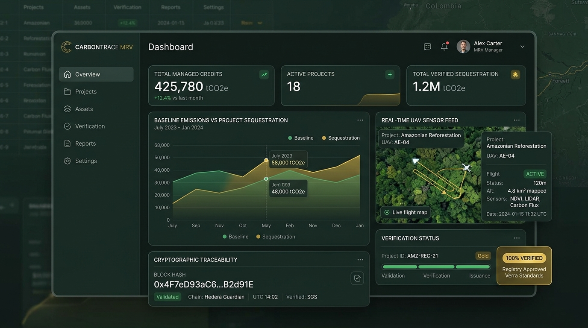

Báo cáo MRV cho dự án tín chỉ carbon
GASCOLAE tự đo đạc, tự định lượng và tự lập hồ sơ MRV, rồi đồng hành tới khi đơn vị thẩm định độc lập đóng hồ sơ.

5 Thách Thức Điển Hình Trong Hồ Sơ Thẩm Định MRV
Những rủi ro kỹ thuật và pháp lý khiến dự án tín chỉ carbon bị treo hồ sơ, lỡ kỳ báo cáo hoặc bị đơn vị thẩm định độc lập (VVB) từ chối.
Chưa chốt được phương pháp luận phù hợp
Chọn sai hoặc áp dụng phiên bản đã hết hiệu lực làm toàn bộ hồ sơ phải tính toán lại từ đầu và lỡ mất kỳ báo cáo theo niên độ.
Thiếu dữ liệu định lượng kỳ đường cơ sở
Không có mốc so sánh chuẩn xác thì không tính toán được lượng giảm phát thải thực tế, dự án mất điều kiện đăng ký tiêu chuẩn.
Số liệu giám sát rời rạc, mất gốc
Không nối được từ số đo thực địa tới con số trong báo cáo, khiến bên thẩm định độc lập (VVB) không thể kiểm chứng lại dữ liệu.
Hồ sơ bị trả lại nhiều vòng vì không ai giải trình trọn vẹn
Bên đo đạc và bên viết báo cáo là hai đơn vị khác nhau; mỗi phát hiện thẩm định phát sinh lại bị đùn đẩy trách nhiệm. Mỗi vòng yêu cầu giải trình kéo dài thêm hàng tháng thời gian phát hành tín chỉ và gia tăng chi phí ngoài dự kiến.
Nghĩa vụ báo cáo có mốc thời gian cố định
Chậm một mốc nộp hồ sơ theo quy định niên độ là lỡ cả kỳ báo cáo của năm, không thể rút ngắn thời gian để làm bù.
Hạ Tầng MRV Đồng Nhất Từ Số Đo Tới Con Số Công Bố
GASCOLAE chịu trách nhiệm xuyên suốt, xóa bỏ khoảng hở kỹ thuật và đồng hành giải trình đến khi VVB đóng hồ sơ.
GASCOLAE nhận trọn chuỗi MRV cho dự án tín chỉ carbon: chốt phạm vi và phương pháp luận theo yêu cầu của chương trình tín chỉ mà chủ dự án chọn, tự thu thập dữ liệu hiện trường bằng UAV kết hợp đo mặt đất, tính phát thải kỳ đường cơ sở và kỳ dự án, đánh giá độ không chắc chắn, rồi lập báo cáo MRV theo đúng mẫu của chương trình.
Sau khi bàn giao, GASCOLAE tiếp tục trả lời phát hiện của đơn vị thẩm định độc lập cho tới khi hồ sơ được đóng. Điểm khác biệt nằm ở chỗ số đo và con số công bố dùng chung một hệ truy vết, do một đầu mối chịu trách nhiệm, nên khi bên thẩm định hỏi lại thì có người giải trình được tới tận dữ liệu gốc.
4 Giá Trị Khách Hàng Nhận Được Từ Năng Lực Thực Thi
Một đầu mối cho cả chuỗi MRV
Đo đạc, định lượng, lập báo cáo và giải trình do cùng một bên thực hiện nên không có khoảng hở hay đùn đẩy giữa các nhà thầu.
Dữ liệu truy vết được tới số đo gốc
Mỗi con số trong báo cáo nối ngược được về dữ liệu thô và nhật ký xử lý, phục vụ đúng thứ mà đơn vị thẩm định (VVB) cần kiểm tra.
Dữ liệu đo đạc lặp lại được giữa các kỳ
Giữ nguyên tham số đo đạc qua từng kỳ giám sát nên kết quả giữa các năm liên tiếp so sánh được trực tiếp với nhau.
Có đánh giá độ không chắc chắn kèm kết quả
Kết quả đi kèm mức độ tin cậy khoa học thay vì một con số trần, giảm thiểu rủi ro bị bên thẩm định chất vấn hoặc khấu trừ khối lượng.
Năng Lực Kỹ Thuật Định Lượng Hiện Trường
Thu thập và xử lý dữ liệu chuẩn xác cao từ bầu trời tới các ô mẫu mặt đất.
Khảo sát hiện trường bằng UAV
Thu thập dữ liệu có tọa độ địa lý trên toàn bộ vùng dự án theo kế hoạch bay viễn thám đã được duyệt.
Đo mặt đất và ô mẫu định vị
Đo kiểm chứng tại hiện trường để hiệu chỉnh và kiểm tra chéo kết quả tính từ dữ liệu viễn thám.
Định lượng phát thải & hấp thụ
Tính phát thải kỳ đường cơ sở và kỳ dự án tuân thủ phương pháp luận của chương trình tín chỉ được chọn.
Đánh giá độ không chắc chắn
Ước lượng sai số của kết quả định lượng và ghi kèm trực tiếp trong báo cáo trình thẩm định.
Nền tảng dữ liệu MRV nhiều kỳ
Bao gồm dashboard theo dõi tiến trình và nhật ký truy vết số hóa qua từng giai đoạn của dự án.
Cấu hình thiết bị chuyên dụng
Tích hợp cảm biến LiDAR, máy ảnh đa phổ và thiết bị đo trắc địa hiện trường theo phương án kỹ thuật.
4 Nhóm Tình Huống Ứng Dụng Thực Tế
Chuẩn bị đăng ký dự án
Khách hàng & tình huống: Chủ dự án cần đưa dự án tới trạng thái sẵn sàng để nộp hồ sơ đăng ký lên chương trình tín chỉ carbon mục tiêu.
Lập báo cáo giám sát một kỳ tín chỉ
Khách hàng & tình huống: Dự án đã đăng ký, cần bộ hồ sơ hoàn chỉnh cho một kỳ giám sát cụ thể để đưa qua thẩm định độc lập.
Duy trì MRV qua nhiều kỳ liên tục
Khách hàng & tình huống: Dự án dài hạn cần theo dõi liên tục và đảm bảo sự nhất quán tuyệt đối giữa các kỳ báo cáo.
Hỗ trợ giải trình với đơn vị thẩm định (VVB)
Khách hàng & tình huống: Hồ sơ đang trong vòng thẩm định độc lập và phát sinh yêu cầu làm rõ kỹ thuật (Clarifications / Findings).
Lộ Trình 6 Bước Thực Hiện Báo Cáo MRV
Quy trình kỹ thuật được chuẩn hóa từ SOP (Asset 04), đảm bảo tính khép kín và nhất quán dữ liệu.
Tiếp nhận yêu cầu, xác định phạm vi dự án & chương trình tín chỉ
Xác định rõ ranh giới địa lý, đối tượng phát thải/hấp thụ và cơ chế tín chỉ carbon áp dụng (VCS, GS, GCC hoặc KNK cấp cơ sở).
Rà soát pháp lý, chốt phương pháp luận và ký hợp đồng
Thẩm định tính hiệu lực của phương pháp luận tính toán và thống nhất các chỉ tiêu đo đạc bắt buộc phục vụ thẩm tra.
Khảo sát hiện trường bằng UAV kết hợp đo mặt đất
Bay quét viễn thám theo kế hoạch bay được duyệt và đo đạc ô mẫu mặt đất để hiệu chỉnh, tuân thủ điều kiện an toàn bay GO/NO-GO.
Định lượng kết quả, QA/QC nội bộ và đánh giá độ không chắc chắn
Tính toán lượng giảm phát thải theo phương trình chuẩn, kiểm soát chất lượng dữ liệu 2 lớp và ước lượng sai số khoa học.
Lập báo cáo MRV, bàn giao kèm gói dữ liệu truy vết
Soạn thảo báo cáo theo chuẩn mẫu, bàn giao toàn bộ bảng tính định lượng, dữ liệu thô và nhật ký xử lý dữ liệu.
Hỗ trợ thẩm định độc lập, khắc phục phát hiện và đóng hồ sơ
Đồng hành cùng chủ dự án giải trình các phát hiện của bên thẩm định độc lập (VVB) cho tới khi hồ sơ được đóng hoàn tất.
3 Cấp Độ Dịch Vụ MRV Carbon
Thiết kế linh hoạt theo từng giai đoạn thẩm định và quy mô diện tích của dự án.
LEVEL 1
Đưa dự án tới trạng thái sẵn sàng đăng ký.
- Chốt phạm vi và phương pháp luận phù hợp
- Khảo sát hiện trường một kỳ đường cơ sở
- Tính phát thải kỳ đường cơ sở (Baseline)
- Kế hoạch giám sát cho các kỳ tiếp theo
LEVEL 2
Đưa hồ sơ của một kỳ tín chỉ qua thẩm định độc lập.
- Bao gồm toàn bộ đầu vào kỹ thuật của Level 1
- Khảo sát đo đạc hiện trường theo kỳ giám sát
- Tính kết quả giảm phát thải theo năm dương lịch
- Lập báo cáo MRV chính thức theo mẫu chương trình
- Đồng hành giải trình tới khi VVB đóng hồ sơ
LEVEL 3
Duy trì MRV qua nhiều kỳ, hỗ trợ đăng ký & ban hành tín chỉ.
- Bao gồm toàn bộ nghiệp vụ của Level 1 và Level 2
- Bổ sung nền tảng dữ liệu nhiều kỳ số hóa
- Dashboard theo dõi và nhật ký truy vết số
- Hỗ trợ hồ sơ đăng ký và ban hành tín chỉ
6 Thành Phần Trong Bộ Hồ Sơ MRV Bàn Giao
Báo cáo MRV
Báo cáo lập theo đúng mẫu của chương trình tín chỉ được chọn (VCS, Gold Standard, GCC...).
Kế hoạch giám sát
Tài liệu mô tả tham số đo đạc, tần suất khảo sát và cách kiểm soát chất lượng (QA/QC) cho các kỳ tiếp theo.
Bảng tính định lượng
Bảng tính phát thải kỳ đường cơ sở và kỳ dự án, kèm công thức toán học và bảng tham số đã dùng.
Gói dữ liệu truy vết
Dữ liệu gốc, kết quả xử lý và nhật ký thao tác để bên thẩm định độc lập kiểm tra đối chứng lại được.
Hồ sơ trả lời phát hiện
Văn bản giải trình cho từng phát hiện hoặc yêu cầu làm rõ của đơn vị thẩm định độc lập.
Nền tảng dữ liệu nhiều kỳ
Thuộc Level 3. Cấu hình và dashboard theo dõi chuyên biệt phục vụ các chu kỳ giám sát dài hạn.
Câu Hỏi Thường Gặp (FAQ)
Các giải đáp chính thức được đối chiếu từ tài liệu kỹ thuật và SOP.
Trao đổi về hồ sơ MRV cho dự án tín chỉ carbon của bạn
Kết nối trực tiếp với đội ngũ kỹ thuật và phát triển dự án GASCOLAE.